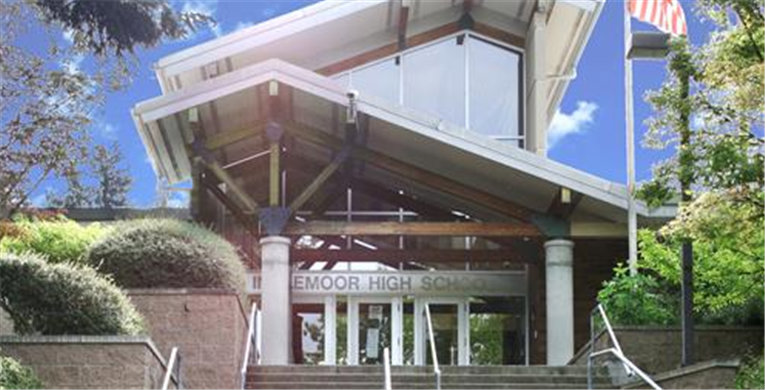

Carnegie Mellon University
B.S. in Computer Science, 2020-2024
I am currently pursuing my undergraduate degree at Carnegie Mellon
University's School of Computer Science. So far, I have taken
courses in artificial intelligence, computer systems, algorithms,
and theoretical computer science. In the future, I intend to take
courses focusing on functional programming, type theory, and more
generally, programming language theory.

Inglemoor High School
International Baccalaureate Diploma, 2016-2020
I earned an International Baccalaureate diploma during high school,
as well as a diploma from the Northshore School District. My final
IB score was a 41 out of a possible 45 points, including the maximum
score of 7 on the Mathematics Higher Level, Physics Higher Level,
and Computer Science Standard Level exams.
Research
I am currently doing research with
Professor Frank Pfenning
at Carnegie Mellon University. My research involves implementing a
set of parallel algorithms in a new functional language which
expresses parallelism through futures. In doing so, we hope to
confirm their theoretical asymptotic complexity, both in terms of
the work done when run on one processor as well as the span when
given an infinite number of processors.
My initial research at the University of Washington was in the
field of biomedical engineering and neuroscience. I worked on
optimizing code in MATLAB for reconstructing images from plane-wave
ultrasound scan data to achieve a better frame rate.